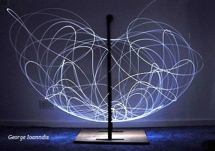

Projects
Processor Design for Reconfigurable Platforms
 Field Programmable Gate Arrays (FPGAs) are customizible integrated circuits (ICs) that contain a large number of configurable logic components which can be set to perform virtually any logic function, thus providing the possibility of abstract design of hardware components. They are fast, deterministic, power efficient, natively parallel and reconfigurable. FPGAs are not restricted to any predetermined hardware function, but allow designers to configure the chip using hardware description languages (such as VHDL and Verilog) to perform functions that any application-specific IC (e.g. radio demodulators, video/sound processors, etc.) or general-purpose IC (e.g. CPUs, GPGPUs) could perform. Today, FPGAs can be found everywhere, from software defined radios, to Ethernet routers, and are just plain awesome.
Field Programmable Gate Arrays (FPGAs) are customizible integrated circuits (ICs) that contain a large number of configurable logic components which can be set to perform virtually any logic function, thus providing the possibility of abstract design of hardware components. They are fast, deterministic, power efficient, natively parallel and reconfigurable. FPGAs are not restricted to any predetermined hardware function, but allow designers to configure the chip using hardware description languages (such as VHDL and Verilog) to perform functions that any application-specific IC (e.g. radio demodulators, video/sound processors, etc.) or general-purpose IC (e.g. CPUs, GPGPUs) could perform. Today, FPGAs can be found everywhere, from software defined radios, to Ethernet routers, and are just plain awesome.
The aim of this project will be to design, develop and implement a compact and efficient microprocessor (µP) FPGA core with a small but expandable set of instructions. The µP will then be used to construct a prototype device (e.g. a calculator). Basic concepts of digital logic and electronics will be explained as a basis for digital systems design. Components and operation of a typical µP will be studied in detail. Furthermore, students will get familiar with the general architecture of FPGA chips in order to understand the effect of their design on physical devices, while VHDL and Xilinx development tools will be used to synthesize and verify these designs.
Ivan Sovic
Ruđer Bošković Institute, Zagreb, Croatia
Ivan is a computer science PhD student working in the Centre for Informatics and Computing at Ruđer Bošković Institute in Zagreb. He obtained his master's degree in electronic and computer engineering from the Faculty of Electrical Engineering and Computing in Zagreb in 2010. Ivan’s research interests include bioinformatics, chemoinformatics, high-performance computing, signal processing and electronics. In 2011, Ivan participated at the Summer School of Science as a project leader. His other interests are music, photography, 8-ball pool, swimming and running.
Bottom-up: Synthesis and Applications of Magnetic Nanoparticles
 The emerging fields of nanoscience and nanotechnology bring together several fields of science, like chemistry, biology, physics and materials science, to manipulate matter at a molecular or an atomic level. They are still in their beginnings, but the first generation of nanotechnology is already being applied to improve materials, and there is great hope that it may be used in medicine. Nanoparticles are a good example of how the properties of very small pieces of matter may have completely different properties from bulk matter (large amounts): we can think of them as bridging the classical and the quantum properties of matter.
The emerging fields of nanoscience and nanotechnology bring together several fields of science, like chemistry, biology, physics and materials science, to manipulate matter at a molecular or an atomic level. They are still in their beginnings, but the first generation of nanotechnology is already being applied to improve materials, and there is great hope that it may be used in medicine. Nanoparticles are a good example of how the properties of very small pieces of matter may have completely different properties from bulk matter (large amounts): we can think of them as bridging the classical and the quantum properties of matter.
Our project will have three parts: in part 1, we'll learn how to synthesize iron oxide nanoparticles. These nanoparticles are superparamagnetic, which means they have the uncanny property that, while they're made of a magnetic material (magnetite), they are not magnetic – but they're very easy to manipulate with applied magnetic fields. We'll take the time to learn why this is, and also test several methods to obtain different types of nanoparticles. For the second part of our project, we'll study how we can use magnetic fields to manipulate these nanoparticles and test their effects on cells. Finally, we'll learn some electronics and programming to create a system of magnetic valves for our nanoparticle suspension using electromagnets and electronic prototyping boards. During this you'll learn some chemistry, physics and biology, and get to see for yourself what all of this nanotechnology thing is about!
Ruben David Rogaciano Ramalho
Instituto Superior Técnico, Lisboa, Portugal
Ruben graduated from a Biochemistry course in the University of Lisbon in 2005, and has recently completed his thesis for a PhD in Biomedical Engineering in Instituto Superior Técnico, also in Lisbon. He’s currently working in biophysics and bionanotechnology, and is generally interested in how the fundamental properties of matter originate complex systems. When not travelling, Ruben can be found discussing terrible movies with friends, playing tennis, reading, or playing RPGs or boardgames.
Data Mining for Potential Diabetes Biomarkers
Even though diabetes is thought of as a single disease, there are many types of diabetes, with different diagnosis and different treatments. Maturity-onset diabetes of the young (MODY) is a rare type of diabetes that is commonly misdiagnosed as Type 1 or Type 2 diabetes. Former are diagnosed with blood or oral glucose tolerance tests, but MODY, hereditary form of diabetes, can only be confirmed with molecular genetic testing, making it expensive and impractical for testing in many countries. While Type 1 diabetes is treated with insulin shots, MODY is treated with oral medications so many patients may spend many years receiving wrong treatment. Glycosylation is one of the most extensive protein modifications, influencing both structure and function of proteins. Due to the non-invasive nature (blood drawing) and the simplicity of glycans quantification, the analysis of the N-glycome has a great potential as a future diagnostic method for various diseases. Recently analysis of glycans bound to plasma proteins in diabetic and control human population have shown a potential for a novel MODY biomarker, so-called DG9-index.
In this project participants will be introduced in process of discovering patterns in datasets. Using various statistical and data mining techniques students will discover how to distinguish MODY patients from the rest of the diabetic population. The main challenge in this project will be to master programming skills in R programming language and apply gained knowledge in analysis of diabetes data sets. During the project students will dive in the field of glycomics and explore efficiency of different glycans and glycan indices as biomarkers for MODY.
Lucija Klaric
Genos Ltd, Zagreb
Lucija graduated molecular biology at the Faculty of Science, University of Zagreb in October 2012. During her studies she has developed an interest in interdisciplinary research and specialized in computational biology. She is currently working in Genos Ltd as data analyst in the fields of glycomics. Lucija participated as a workshop leader at the Summer science factory from 2010-2012. In her spare time she plays in Tamburica orchestra from Samobor and enjoys outdoor activities as cycling, scuba-diving and hiking.
Deciphering the Past Using Ancient DNA
 Ancient DNA made its first appearance back in 1984, when a group of scientists led by Ross Higuchi managed to extract tiny trace amounts of DNA from a museum specimen of quagga, an extinct subspecies of the plains zebra. Only a year later, Svante Pääbo extracted DNA from a 2,400 year old Egyptian mummy. With the development of polymerase chain reaction, which uses DNA polymerase to make millions and millions of copies of DNA fragments of interest, the field of ancient DNA suddenly started to grow. Today, we can recover DNA from various archaeological and paleontological remains to study genetic relationships between long extinct organisms and their contemporary relatives. But how far in the past can we go? Is it possible to reconstruct dinosaur or Neandertal genome?
Ancient DNA made its first appearance back in 1984, when a group of scientists led by Ross Higuchi managed to extract tiny trace amounts of DNA from a museum specimen of quagga, an extinct subspecies of the plains zebra. Only a year later, Svante Pääbo extracted DNA from a 2,400 year old Egyptian mummy. With the development of polymerase chain reaction, which uses DNA polymerase to make millions and millions of copies of DNA fragments of interest, the field of ancient DNA suddenly started to grow. Today, we can recover DNA from various archaeological and paleontological remains to study genetic relationships between long extinct organisms and their contemporary relatives. But how far in the past can we go? Is it possible to reconstruct dinosaur or Neandertal genome?
The main goal of this project is to extract and analyze DNA from various bone samples of different age and origin from an archaeological site. We will learn how to excavate bones, set up an ancient DNA laboratory and determine the bone origin at both morphological and molecular levels. There are many opportunities as well as limitations of the field of ancient DNA due to the degradation of DNA after the death of an organism and the contamination of samples with contemporary DNA. Participants of this project will face the challenge to overcome numerous obstacles in retrieving DNA from ancient bone samples as well as interpreting results obtained. Practical laboratory tasks will be accompanied with theoretical knowledge of biochemistry, cell biology and genetics.
Mateja Hajdinjak
Faculty of Science, University of Zagreb, Croatia
Mateja is a graduate student of molecular biology at the Faculty of Science, University of Zagreb, with scientific interests in evolutionary genomics, molecular anthropology and paleoanthropology. She hopes to pursue a Ph.D. that combines the retrieval of DNA from ancient hominin specimens and computational genomics. In her spare time she enjoys reading books, drawing on the walls, dancing to all kinds of music and baking cookies for her friends.
How to Kill Superconductivity
 Ever since high-temperature superconductors (high-Tc) were discovered a quarter-century ago, they remain at the forefront of modern condensed matter physics research. Many high-Tc superconducting systems have been made and explored since, but the mechanism of superconductivity remains a mystery. However, it is known that all these compounds contain planar layers made of copper and oxygen atoms, which play a crucial role in conducting current with zero resistance. Our goal is to destroy the superconducting state by replacing some of the copper atoms with both magnetic and non-magnetic impurities. From the effects of different impurities we will gain direct insight into the strange properties of the superconducting planes. Two separate projects - chemical (synthesis of samples) and physical (detailed sample characterization) will cooperate on this topic and, in the end, together draw the main conclusions.
Ever since high-temperature superconductors (high-Tc) were discovered a quarter-century ago, they remain at the forefront of modern condensed matter physics research. Many high-Tc superconducting systems have been made and explored since, but the mechanism of superconductivity remains a mystery. However, it is known that all these compounds contain planar layers made of copper and oxygen atoms, which play a crucial role in conducting current with zero resistance. Our goal is to destroy the superconducting state by replacing some of the copper atoms with both magnetic and non-magnetic impurities. From the effects of different impurities we will gain direct insight into the strange properties of the superconducting planes. Two separate projects - chemical (synthesis of samples) and physical (detailed sample characterization) will cooperate on this topic and, in the end, together draw the main conclusions.
"Synthesis and Doping of Superconducting Ceramics" (Project leader: Damjan Pelc): Every investigation of new and strange properties of some material must begin with the chemical synthesis of the material. Superconducting ceramics are relatively easy to make if one has the right tools and ingredients, as we will find out in this project. We will focus on a specific system called YBCO (for YBa2Cu3O7), and employ two methods in synthetizing it and introducing impurities in place of copper atoms - doping - in order to influence its superconductivity. We will analyze the obtained samples chemically - by iodometric titration - and perform simple tests of superconductivity - levitation of magnets - to see which method works best. Our physical colleagues will make precision measurements on our finest samples, and in the end we will join them in analyzing the influence of impurities on superconductivity.
"Measuring Magnetism in High-TC Superconductors" (Project leader: Tonci Cvitanic): Magnetic properties are of great importance in solid state physics, because they give information about the behavior of electrons in the material. High-temperature superconductors, like normal metals, contain many 'free', mobile electrons. But below a certain temperature, Tc, the electrons start to cooperate and conduct current without any resistance. This superconducting state has peculiar magnetic properties, and it is our goal to measure them. We will design and construct an extremely sensitive device for measuring magnetism in materials - an AC susceptometer. Using the susceptometer, we will measure the response of samples with different impurities (provided by the chemical project) in dependence on temperature, from room temperature all the way down below -200°C. We will study the basics of magnetism in materials, learn about the nature of superconductivity, try to predict what different kinds of impurities will do to the superconducting state and compare our ideas to the experimental findings.

Damjan Pelc
University of Zagreb, Croatia
Damjan graduated in winter 2011 at the Department of Physics, Faculty of Science of the University of Zagreb, and is currently working on a project investigating high-Tc superconductors in the NMR lab of said Department. He has been project leader at the Summer School of Science for five times. He enjoys constructing stuff (especially if it works afterwards), all kinds of music, trains, and the occasional table tennis.

Tonci Cvitanic
University of Zagreb, Croatia
Tonci is currently working as a young researcher at the Department of Physics, Faculty of Science at the University of Zagreb. His field of research is NMR spectroscopy of high-Tc superconductors and, at the moment, development of a phosphorescent thermometer. He is also a teaching assistant at the University. This is his first time participating in Summer School of Science. Tonci likes long walks, hiking and machines, especially submarines.
Double Trouble: Dynamics of the Double Pendulum
Attach a little ball to the end of a small wooden stick, hold the stick from the other end, and let it swing. Its motion is periodic, smooth, and predictable - this is an ordinary pendulum. Attach another pendulum to the edge of the first one, however, and the system can behave in a vastly erratic and complex manner. Its motion can be entirely unpredictable. This is the double pendulum - a system that exhibits high sensitivity to initial conditions. Such systems are often termed "chaotic". There are many chaotic systems, both in mathematics and in nature: an abstract non-linear equation can behave chaotically, while Earth's climate is also unpredictable, as rooted in the popular phrase "the butterfly effect". The double pendulum is important in that despite its apparent simplicity (it's much simpler than Earth's climate, for sure), it is a real physical system that exhibits chaos.
In this project, students will explore the mesmerizing dynamics of the double pendulum, by building a physical pendulum and comparing its movement to results suggested by theory. We will focus on the complete creation of both model and the real life system: the mathematical theory requires studying elementary physics, differential equations, and chaos, while constructing and measuring the system demands hammer-and-nail engineering, as well as image processing for motion tracking. Numerical algorithms will be used for solving the equations generated by the model, and hence some computer programming will also be involved. In the end, the students will have integrated a variety of different fields in order to understand chaos a little better, seeing how a seemingly simple system can lead to complex behavior.

Renan Gross
Technion - Israel Institute of Technology, Israel
Renan Gross is currently studying for his undergraduate degree in mathematics and physics at the Technion - Israel Institute of Technology. He is interested in all fields of science, from mathematics and computers to physics, informatics and biology. During his spare time he writes about science, politics and life, plays the piano, and cycles and slacklines for fun. Renan mentored twice in the Summer School of Science: as a swapshop leader in 2011, and as a project leader in 2012.